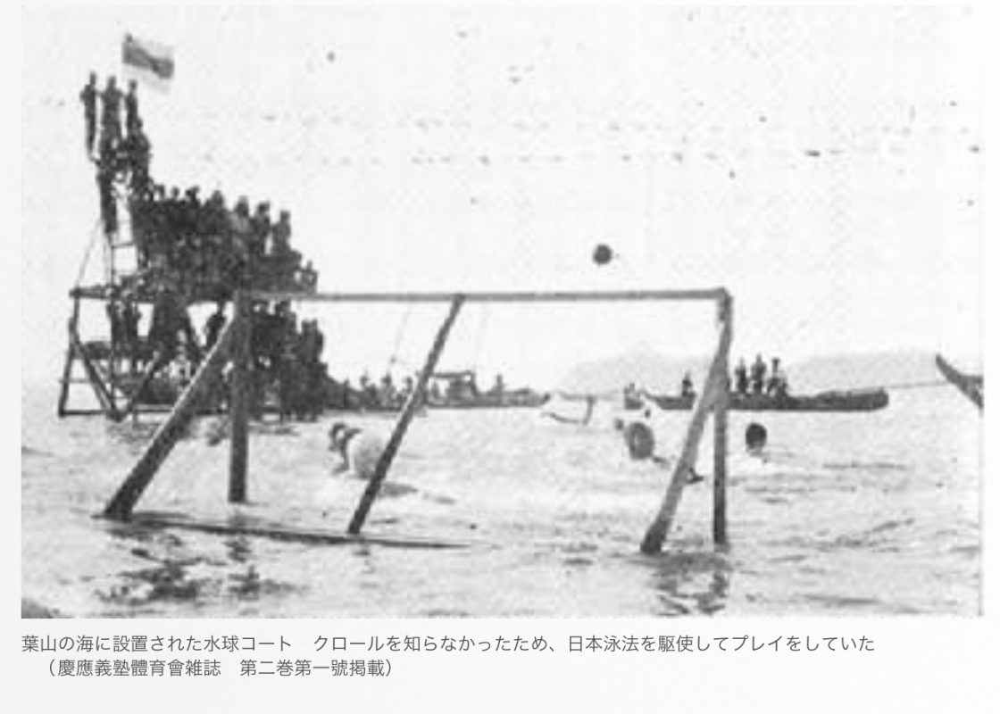
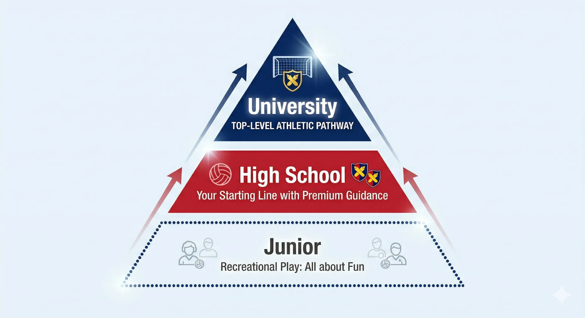
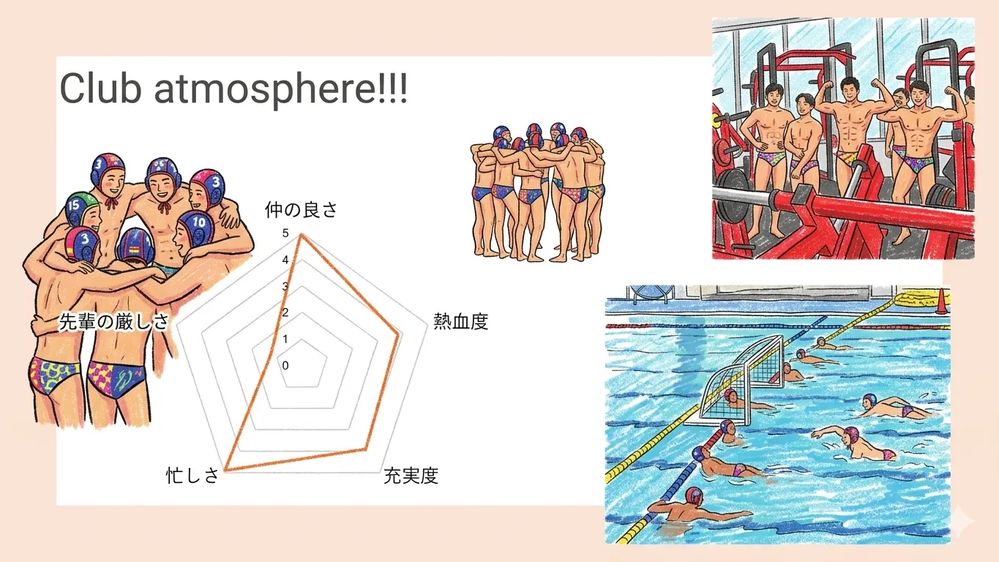

私たちについて
慶應水球の誇りと、受け継がれてきたもの。
「」
歴史と伝統を大切にしながら、毎日新しい自分たちに更新していくことを目指しています。
年創部、日本水球の先駆け
100年以上の歴史を持つ慶應水球。先輩たちの思いを受け継ぎながら、進化を続けています。

中学から大学まで連携
大学のトップチームを目標に、中学生から大学生までが連携して強くなる仕組みがあります。

水球部の魅力
体力と考える力の両方が身につくスポーツです。
速く、立体的なチームスポーツ
パスをつないで一気に攻め上がり、水面から跳び上がってシュート。いまの水球は、バスケのように高速化・立体化が進んでいます。
トップクラスの環境
協生館プールで練習し、社会人や大学生のコーチが丁寧に指導します。
ほとんどが未経験
大半の部員が高校から水球を始めています。教え合いながら、一緒に成長できます。
部員が指導者を評価する
部の雰囲気
本気で全国を目指すからこそ、オンとオフのメリハリを大切にしています。

練習
短い練習時間で、集中して上達します。
1年間の流れ
全国大会を目指す1年間です。
- 試合が続く一番熱い季節
- 早慶戦
- 関東春季大会毎年連続出場
- 神奈川県大会全国レベルの強豪と対戦
- 関東大会上位なら全国へ
- 全国大会（インターハイ）
- 新チームがスタート
- 神奈川県 新人戦
- 体力づくりの期間。原則、土日のどちらかがお休み
- 日吉杯日吉で開催される、高校チーム同士のリーグ戦
- 合宿・遠征、他校との練習試合
こんな人を待っています
私たちと一緒に成長しましょう。
本気で全国を目指したい人
高い目標を持ち、チームと一緒に最後まで頑張れる人。
自分で考えて動きたい人
水球は頭を使うスポーツです。状況を見て自分で判断する力が身につきます。
最高の仲間と出会いたい人
目標に向かう日々を一緒に乗り越え、一生ものの仲間ができます。
入部までの流れ
まずは気軽に見学に来て、雰囲気を体感してください。
- プールでの体験会、または教室での説明会に参加する説明会に来られなくても、直接プールに来てくれれば大歓迎です。
- 先輩やコーチに、気になることを聞いてみる
- 仮入部届を出す手続きは先輩がサポートします。
- 本入部。最高の環境で、一緒に水球を楽しもう。
📍 迷ったら、まずはここへ
月・火・水・金 15:00
協生館の正面玄関前（外側）で、先輩が看板を持って待っています。